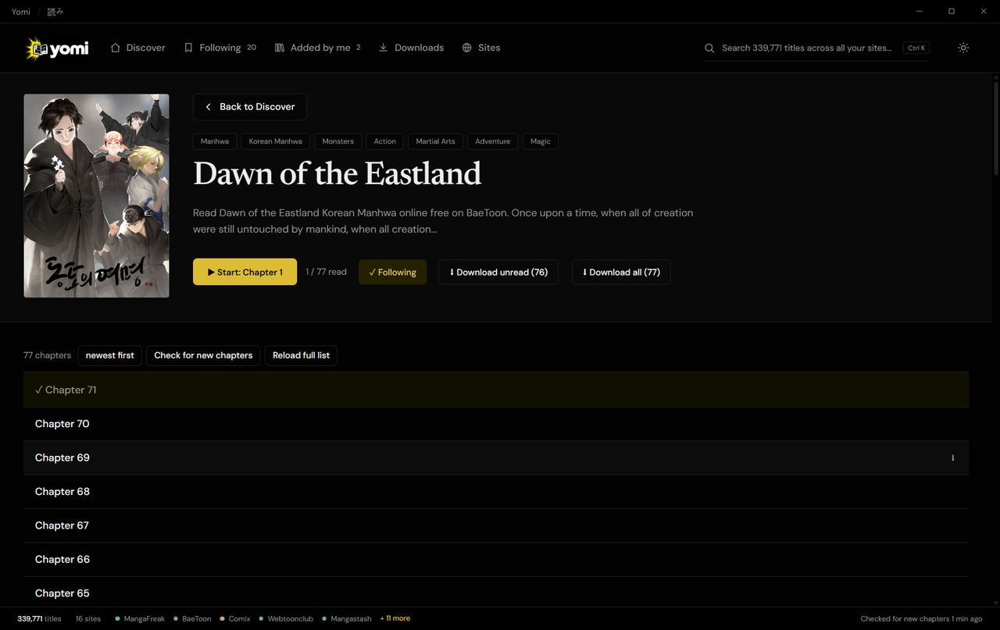

Free · Windows 10 and 11
All your manga in one quiet place
Yomi brings your manga, manhwa and manhua sites together in one clean, ad-free reader. Search everything at once, follow your series and read without the clutter.
One installer for every Windows PC (x64 and ARM). Updates itself.

Everything you read, in one app
Yomi doesn't host anything. It reads the sites you choose and shows them in its own calm reader.
All your sites together
Paste a site's address and every title on it joins one catalog. Search hundreds of thousands of titles at once.
No ads, no clutter
Only the pages. Read top to bottom, page by page, or right to left for manga.
Smooth reading
Keep scrolling straight into the next chapter. Night brightness and a magnifying glass when you need them.
New chapters, found for you
Follow a series and Yomi tells you when a new chapter is out, with its cover.
Read offline
Download chapters to read without the internet, or save them as CBZ files.
Never stuck on a broken site
If one site fails, Yomi opens the chapter from your other sites. A daily check tells you which site broke and why.
MyAnimeList and AniList
See scores and the top lists, and keep your AniList progress in step as you read.
English and Arabic
The whole app in English or Arabic, right to left. English and Arabic sites side by side.
Yours, on your PC
No account needed. Your library and progress stay on your computer.
A page for every series
Every site that has the series in one place, the fastest one picked for you, and your place remembered.

Get started in a minute
- Download Yomi-Setup and run it.
- On Discover, pick a site from Popular sites, or paste any manga site's address into Add a site.
- Search with Ctrl + K, open a series and press Read.
- Press Follow to hear about new chapters.
If Windows shows "Windows protected your PC", choose More info, then Run anyway. This appears for apps from small developers that don't pay for a signing certificate.
Questions
Is Yomi free?
Yes. No ads, no subscription, and the code is open on GitHub.
Does Yomi host manga?
No. Yomi is a reader: it opens the sites you add yourself and shows their pages without the ads around them.
Is my data private?
Your library, progress and downloads stay on your PC. Yomi has no account and no tracking. Scores and suggestions ask MyAnimeList and AniList for the title you open, and you can turn that off in Settings.
Which sites work?
Many English and Arabic manga sites. Yomi lists tested ones under Popular sites, and you can try any other site by pasting its address.